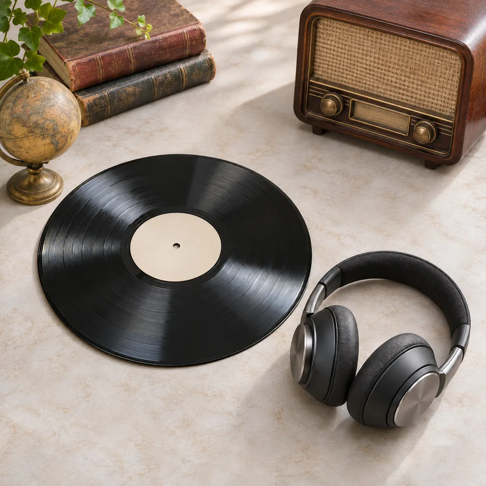
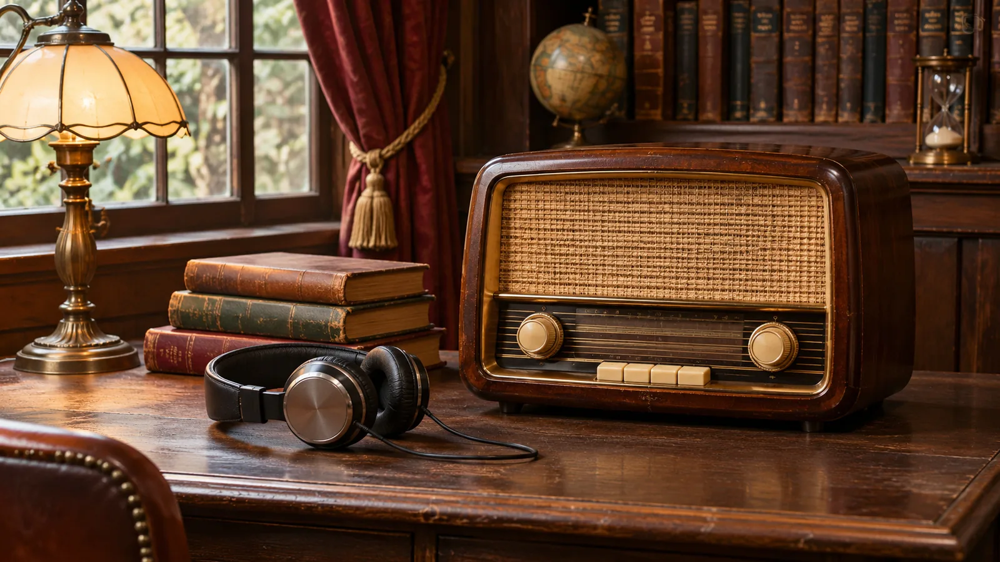
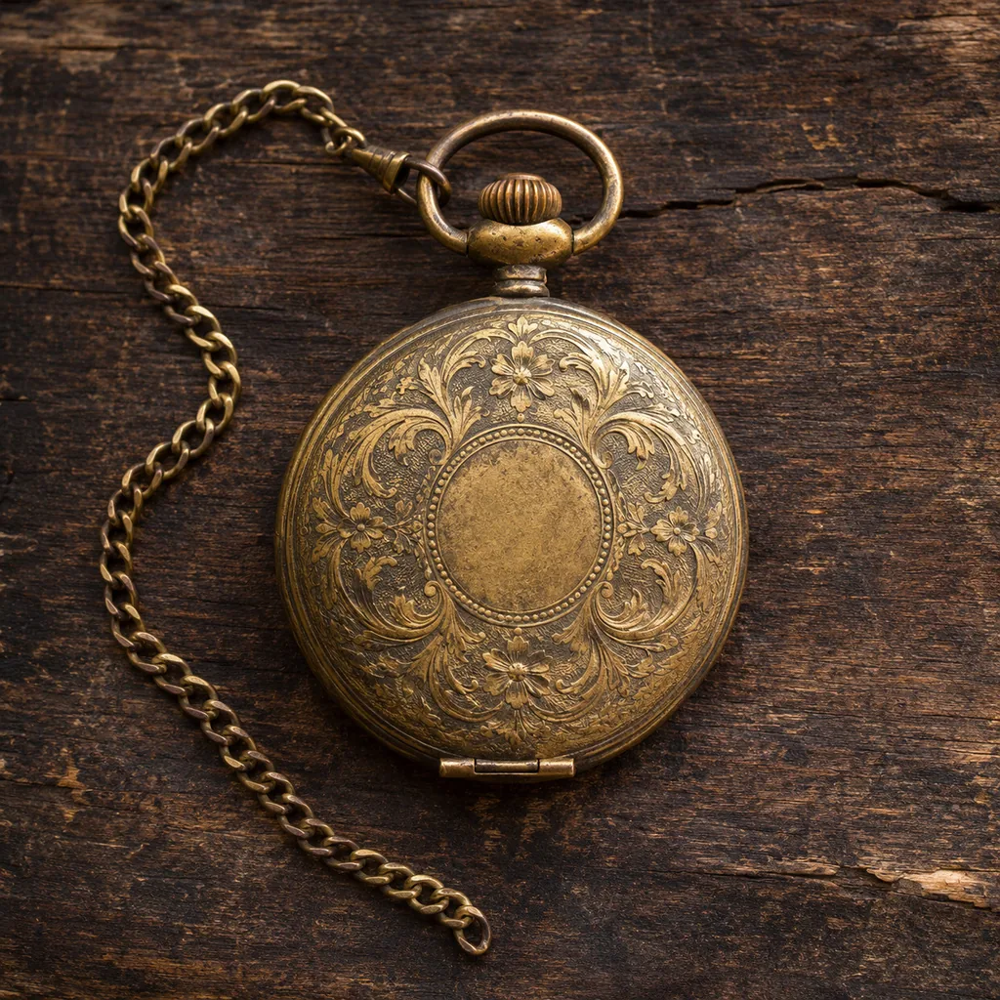

Sonidos y memoria
La radio, una memoria compartida.
Voces, canciones y relatos que encuentran un lugar en nuestra vida cotidiana.

Radio por streaming · Viernes 19:30 a 21:30
Evocamos la historia y sus personajes, sin olvidarnos del presente y apuntando al futuro.
Dos horas para mirar el tiempo de otra manera.
El archivo abierto
Lecturas de muestra para imaginar el espacio de contenidos del programa.

Sonidos y memoria
Voces, canciones y relatos que encuentran un lugar en nuestra vida cotidiana.
Miradas del pasado
Un punto de partida para pensar cómo representamos el mundo que habitamos.
Objetos y relatos
Cartas, fotografías y objetos que invitan a recuperar historias para compartir.
El programa
El Túnel del Tiempo es un programa de radio por streaming. Un espacio para evocar la historia y a sus protagonistas, con los pies en el presente y la mirada puesta en lo que viene.
Cada viernes, de 19:30 a 21:30, la invitación es a encontrarnos alrededor de esas historias.
El encuentro de cada semana
Viernes · 19:30 a 21:30Fechas para recordar
El 27 de agosto, desde el Teatro Coliseo de Buenos Aires, se transmitió la ópera Parsifal. Una fecha que abrió un nuevo capítulo para la radio en nuestro país.
Consultá la fuente · Argentina.gob.ar ↗El 10 de noviembre nació José Hernández, autor de El gaucho Martín Fierro. Su nacimiento se recuerda en la Argentina con el Día de la Tradición.
Consultá la fuente · Argentina.gob.ar ↗El 16 de noviembre se aprobó en Londres la Constitución de la UNESCO, la Organización de las Naciones Unidas para la Educación, la Ciencia y la Cultura.
Consultá la fuente · UNESCO ↗
Fotos alegóricas
El presente, el porvenir y los recuerdos, en imágenes.
Selección de imágenes alegóricas. Las escenas no representan el estudio ni el archivo documental del programa.
La conversación sigue
Acercanos una idea, un recuerdo o una consulta sobre el programa. También podés pedirnos el enlace para escuchar el próximo encuentro.
+54 9 11 3385-4626 ↗@eltuneldeltiempo_ok ↗